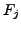
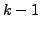

The FHT applies to those Hough transform problems in which a feature
 votes for a hyperplane in parameter space (a hyperplane is
a  dimensional generalisation of a plane, where  is the dimension
of parameter space). This means that the relationship between feature space
and parameter space must be linear in the parameters.
In addition, it must be known in
advance how many votes the solution will receive in the Hough
transform.
The FHT is also restricted in that it only supplies one
``best fit'' solution, whereas for the more conventional Hough transform
method above it is plausible to consider local maxima as alternatives to
the global maximum, i.e. the block in parameter space
receiving the most votes.
is the dimension
of parameter space). This means that the relationship between feature space
and parameter space must be linear in the parameters.
In addition, it must be known in
advance how many votes the solution will receive in the Hough
transform.
The FHT is also restricted in that it only supplies one
``best fit'' solution, whereas for the more conventional Hough transform
method above it is plausible to consider local maxima as alternatives to
the global maximum, i.e. the block in parameter space
receiving the most votes.
A major advantage of the FHT is that it only uses addition and multiplication by two, which in integer arithmetic can be done efficiently using bitwise shifts. This is very convenient for computers on which integer arithmetic is much faster than floating point arithmetic.